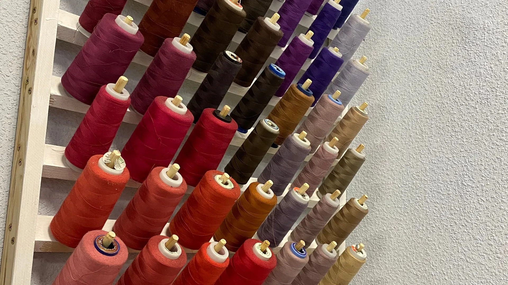
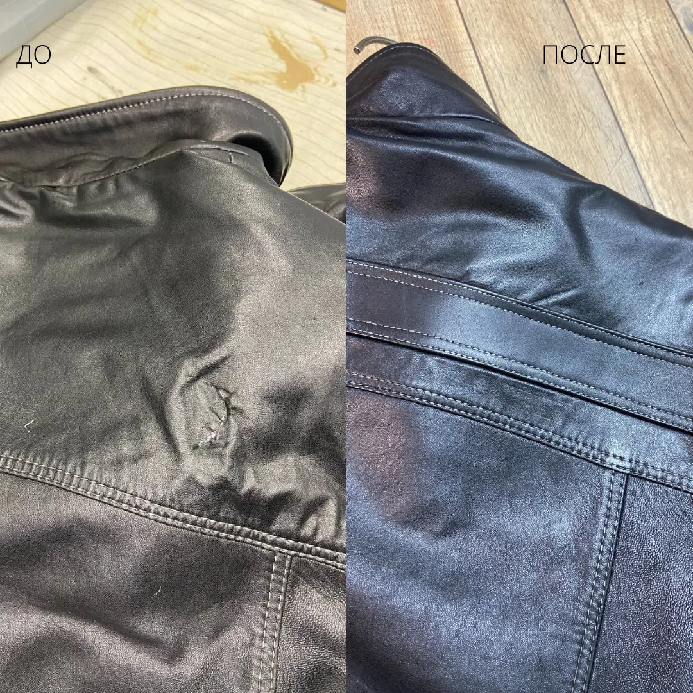
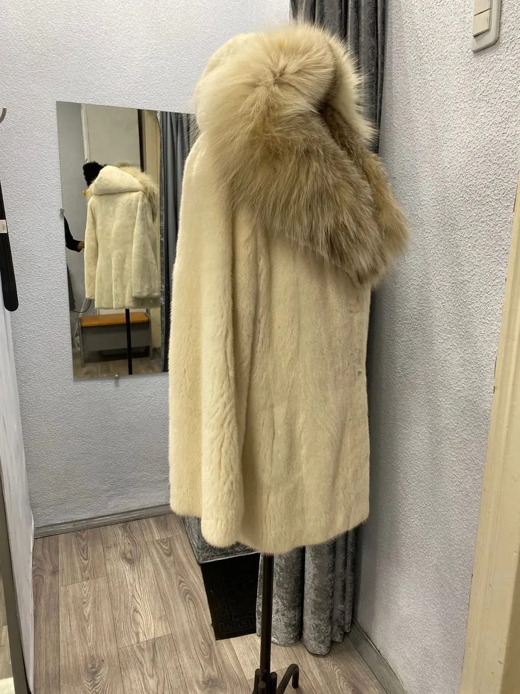
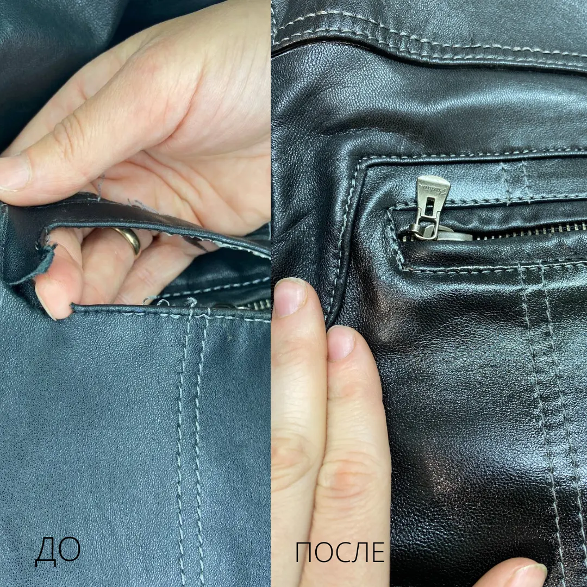

Ателье на улице Кирова, 25
Ремонт и перекрой меха, кожи, трикотажа в Калуге
Подшить, ушить, заменить молнию – и то, за что не берутся другие: шуба, дублёнка, вязаный свитер. Цену скажем по фото.
- Перекраиваем шубы и дублёнки из старой модели в новую
- Ремонтируем кожу, подбираем её по тону
- Берёмся за вязаные вещи

Что делаем
Цену называем по фото вещи или при приёме, после осмотра.
Мех и кожа
- Перекрой шубы из старой моделиуточнить
- Перешив дублёнкиуточнить
- Ремонт кожаной курткизамена деталей, скрытая заплаткауточнить
- Замена молнии в куртке, дублёнкеуточнить
Подшить и ушить
- Брюки, джинсыуточнить
- Юбка, платьеуточнить
- Посадить платье по фигуреуточнить
- Перекрой форменных брюкуточнить
Ремонт и штопка
- Вязаные вещиуточнить
- Штопка джинсовуточнить
- Мелочи: петли, пуговицы, ременьуточнить
Пошив
- Платье, юбка, блузкауточнить
- Брюки, в том числе на нестандартную фигурууточнить
- Верхняя одеждауточнить
Цены на типовые работы появятся здесь после согласования с мастером. Пока – по фото в WhatsApp или по телефону.
Как отдать вещь
- 01
Фото вещи
Напишите, что нужно сделать, и приложите фото – ответим, что возможно и сколько это стоит.
- 02
Осмотр и мерки
Мастер смотрит вещь, снимает мерки и предлагает, как сделать лучше.
- 03
Работа
Подшиваем, перешиваем, перекраиваем. Для кожи подбираем материал по фактуре и тону.
- 04
Забираете
Когда вещь готова, присылаем СМС – можно приходить.



За что нас хвалят в отзывах
Берёмся за сложное
Шубы, дублёнки, кожа и вязаные вещи – то, от чего отказываются в других ателье.
Исправляем чужую работу
Приносят вещи после неудачной переделки в другой мастерской.
К нам возвращаются
«Не первый год», «обслуживаемся всей семьёй» – так пишут на Картах.
Удобные часы
В будни до 20:00, в субботу до 16:00. Рядом Драмтеатр.
Отзывы с Яндекс.Карт
«Хочется выразить благодарность Ателье "Sofi" ♥ За качественное оказание услуг 👍 Очень важно что именно здесь не отказывают в помощи даже при нестандартных и сложных случаях. Спасибо вам большое за работу.»
елена васина · 20 августа 2024
«Мне в этом ателье перекраили норковую шубу, из старой модели сделали новую. Спасибо большое мастерам. Буду заходить чаще, всем советую!»
Тигрися Википедивна · 14 июля 2025
«Уже не первый раз подшиваю вещи в данном ателье, всегда все быстро и качественно, по очень доступным ценам! Очень удобно, что сообщают по смс когда можно прийти за вещам. Еще ни раз обращусь к вам🤍»
Анастасия Смит · 13 апреля 2024
Отзывы с карточки на Яндекс.Картах, без правок.
Частые вопросы
Можно узнать цену, не приезжая?
Да: пришлите фото вещи и пару слов, что нужно сделать. Ответим в рабочие часы.
Берётесь за мех и кожу?
Да: перекрой шуб, перешив дублёнок, ремонт кожаных курток с подбором кожи по тону.
А за вязаные вещи?
Да, ремонтируем трикотаж и вязаные свитеры.
Шьёте с нуля?
Да: платья, юбки, блузки, брюки и верхнюю одежду. Брюки шьём и на нестандартную фигуру.
Как вас найти?
Улица Кирова, 25, рядом с Драмтеатром. Вход с крыльца под кованым козырьком.
Пришлите фото вещи – ответим сроком и ценой
- Адрес
- ул. Кирова, 25, Калуга
- Часы
- пн–пт 10:00–20:00, сб 10:00–16:00, вс – выходной
- Телефон
- +7 (000) 000-00-00
- ВКонтакте
- vk.ru/ваша-ссылка